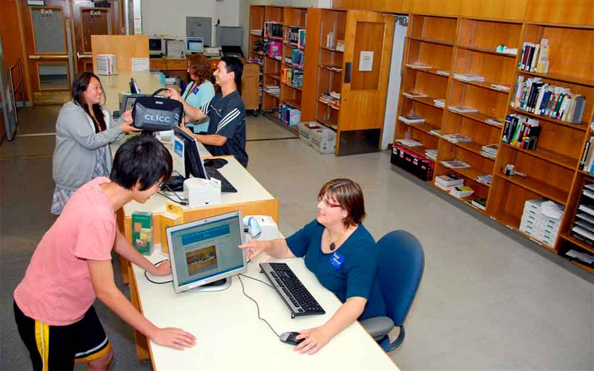
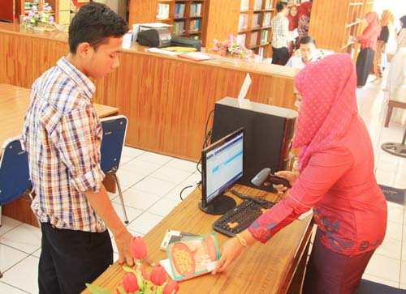
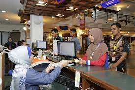
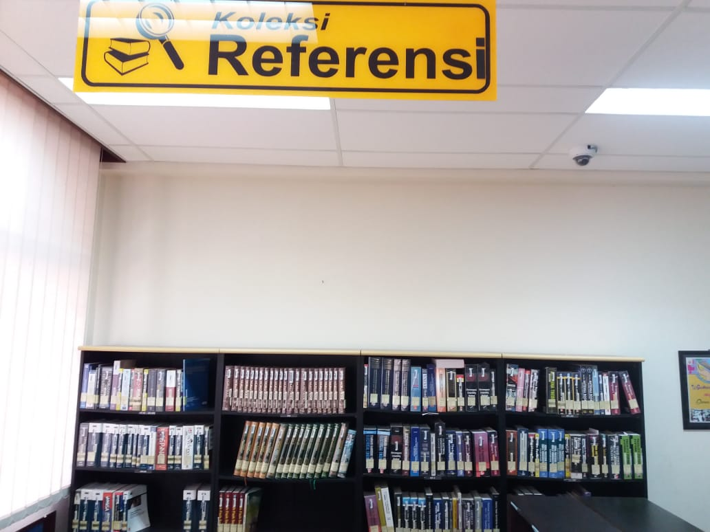
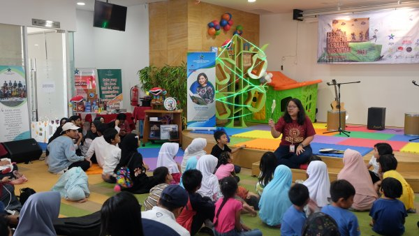
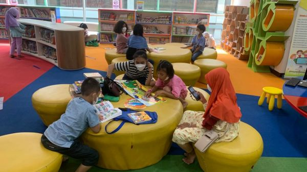

Oleh Larasati Maulida Putri
NIM=11210251000003
5A Ilmu Perpustakaan
Pengertian layanan perpustakaan secara dinamis berkembang seiring dengan kebutuhan dan pemahaman masyarakat terhadap informasi. Pada awalnya, yang dimaksud dengan layanan perpustakaan adalah pemberian layanan bahan pustaka yang dimiliki perpustakaan kepada pemustaka yang datang ke perpustakaan. Pustakawan akan memberikan layanan jika pemustaka datang ke perpustakaan. Hal ini mencerminkan layanan perpustakaan yang pasif. Seiring dengan meningkatnya kebutuhan dan pemahaman masyarakat terhadap informasi sebagai akibat dari globalisasi informasi, perpustakaan harus menyesuaikan diri dengan memberikan layanan yang bersifat aktif bahkan proaktif
dengan menawarkan berbagai bentuk informasi kepada masyarakat yang dilayaninya.
Selain itu, perpustakaan juga harus siaga dengan kebutuhan informasi masyarakat yang menuntut kecepatan layanan dan ketepatan informasi yang diberikan dengan menyediakan perangkat penelusuran informasi untuk memudahkan temu balik koleksi yang dimiliki perpustakaan dan apabila memungkinkan dengan perangkat tersebut perpustakaan setidaknya juga dapat memberikan rujukan/pilihan lain kepada pemustaka apabila koleksi yang dibutuhkan tidak tersedia di perpustakaan.Berikut ini beberapa macam layanan perpustakaan:
Layanan Sirkulasi

Layanan sirkulasi merupakan pelayanan peminjaman, pengembalian dan perpanjangan koleksi yang telah dipakai oleh pemustaka di luar Perpustakaan.
Layanan Referensi

Layanan referensi adalah salah satu jasa perpustakaan yang menyajikan koleksi referensi kepada para pemustaka, contohnya seperti: terbitan berkala, ensiklopedis, ksmus, dan lain sebagainya.
Layanan Anak

Layanan anak adalah pelayanan perpustakaan yang ditujukkan untuk anak-anak sampai anak berumur 12-13 tahun, didalamnya termasuk pengembangan koleksi anak-anak, mendongeng dan membantu pengajaran dalam mengerjakan tugas atau pekerjaan rumah.
Berikut tadi sedikit contoh dari macam-macam layanan yang ada di perpustakaan, sebenarnya masih ada banyak lagi macam-macam layanan perpustakaan baik secara konvensional ataupun digital. Penulis berharap semakin banyak orang yang mengetahui macam-macam layanan perpustakaan dan menjadi tertarik untuk mengunjungi perpustakaan.
Info selengkapnya, Klik disini!